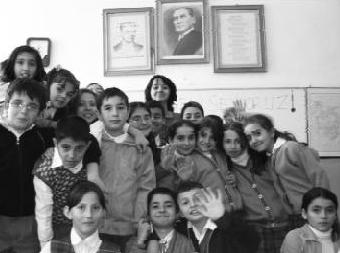

İlk seminerimde inanılmaz heyecanlıydım. Her seminerin sonunda da hep mutlu ayrıldım. O huzuru, başarma hissini hiçbir yerde hissetmedim. TUP'tan çok şey öğrendim; arkadaşlığı ve birliktelik hissinin en güzelini, derinini yaşadım. Biz bir aile gibiyiz. (Huriye Karakurt)
Huriye, cesur, ne istediğini bilen, ayakları yere çatır çatır basan, sağlam bir böcekti. Çok iyi şeyler yaptı.